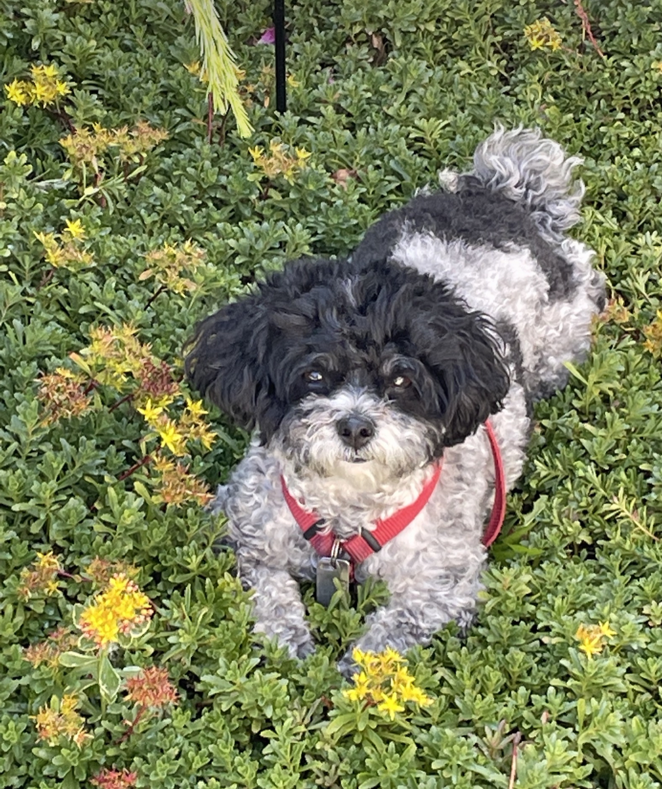
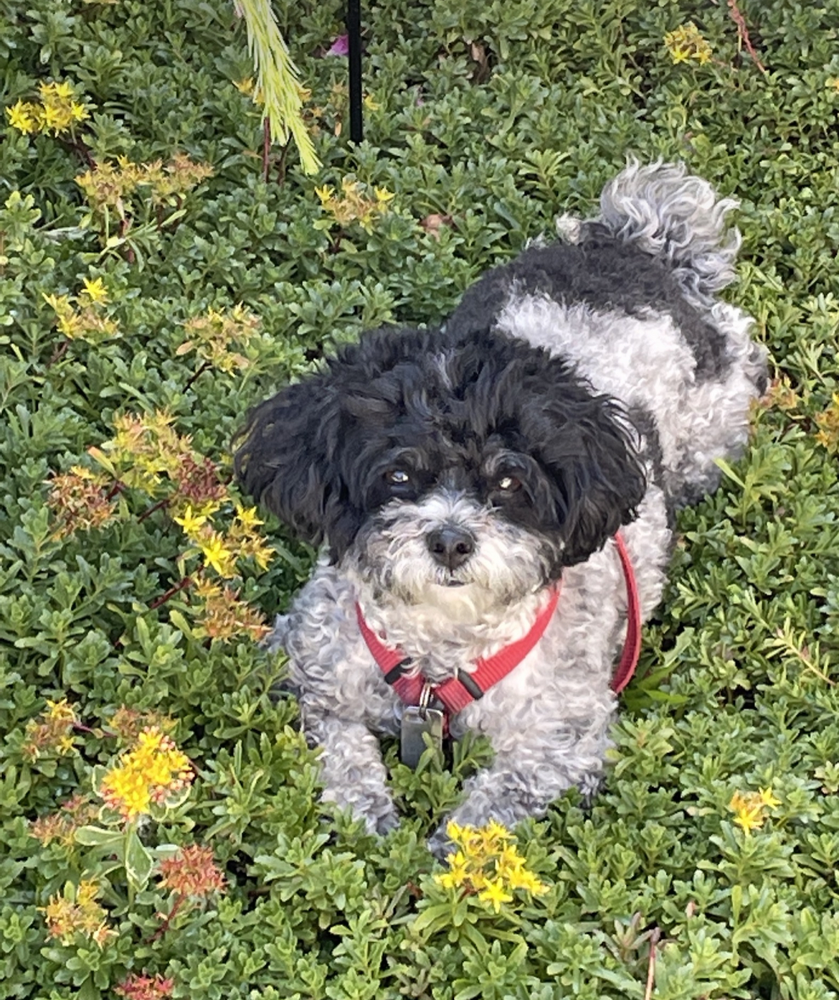

About Me
Hi, I'm Kate Francis! I attended Westwood Regional High School
and I am currently attending Quinnipiac University as a sophmore.
I first became interested in the computer science field when I
decided to take AP Computer Science in high school. I had so much
fun in that class and I did so well that I got a 5/5 on the AP test.
Currently, I am quite experienced in Java and have a good
understanding of HTML and CSS. My interests include collecting trading
cards, gaming, and cooking! My favorite music artist is Ado; I love her song All Night Radio.

 
